Record → row
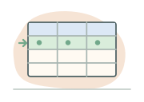
One observation at a declared grain. A dispensing row might say which product, client and transaction line occurred at a particular time.
From relational keys and dimensional modeling to Oracle 19c internals, national health-data integration, warehouse engineering, and advanced analytical SQL.
How could Nepal design, populate, operate, protect, and analyze an Oracle-based national health information warehouse?
Imagine a fictitious client, CLIENT_SYN_001, consulting a physician in Pokhara, filling a prescription at a community pharmacy, and attending an emergency department two days later. That evening the client is admitted to hospital. Each activity leaves a different kind of record. No single record contains the entire journey.
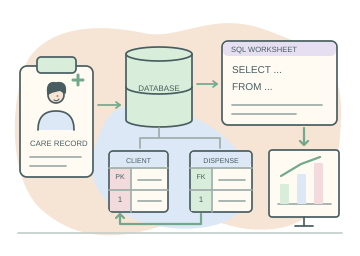
This is a proposed teaching system. HealthDataNepal, Pharma-Nepal terminals, all people, providers and facilities in this monograph are fictional. Every displayed record is synthetic. Geography provides context; neither the diagrams nor the examples claim that Nepal operates this infrastructure. The browser demonstrations simulate calculations locally and never connect to Oracle.
A consultation records a completed clinical encounter; a dispensing line records one product supplied; an emergency attendance records arrival and departure; an inpatient stay records an admission-to-discharge episode. A governed identity-linkage service can assign the same analytical client key to these events without distributing identifying information to every analyst.
The sequence does not prove that the medicine caused the emergency visit. Administrative records describe recorded activity, with coding error, incomplete capture and selected access to care. Linkage establishes a possible temporal relationship; causal inference requires a study design, assumptions and usually additional information.

One observation at a declared grain. A dispensing row might say which product, client and transaction line occurred at a particular time.
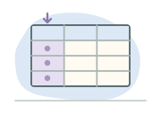
A named attribute with a domain: quantity is a nonnegative number; an event timestamp is a time value, not an arbitrary string.
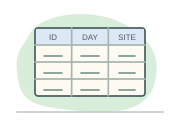
A relation is a set of tuples over named attributes. A SQL table approximates that model but can contain duplicates and NULLs unless constrained.
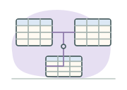
A logical namespace of objects. An Oracle schema is owned by a database user and can contain tables, views, sequences and program units.
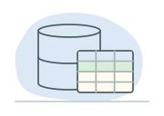
A managed persistent collection supported by concurrency control, recovery, constraints, a catalog and a query language.
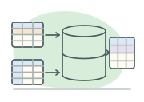
An integrated, historical analytical database. It preserves source context while organizing consistent facts and dimensions for questions across systems.
An Excel workbook can hold rows and columns. A database additionally coordinates concurrent changes, restricts invalid states, separates access rights, and recovers committed work after failures. A database is not automatically well designed: those guarantees depend on constraints, transactions, operational procedures and the actual configuration.
Technical baseline: Oracle 19c Database Concepts: introduction. All journey events are original teaching examples.
A relation describes a kind of thing. A key distinguishes its rows. A dependency says which values determine others.
Write a relation as R(A₁, …, Aₖ). Its attributes have domains, such as a set of valid product codes or nonnegative quantities. A tuple is one assignment of values to those attributes. Mathematical relations have no intrinsic row order; SQL needs ORDER BY whenever output order matters. A candidate key is a minimal set of attributes that uniquely determines a tuple. Minimal means that dropping any attribute destroys that guarantee.
A functional dependency X → Y means any two valid tuples agreeing on X also agree on Y. It is a rule about all permissible data, not a pattern inferred from a few sample rows. For example, a stable product identifier may determine its ingredient within a governed coding version. A client's name does not determine identity, even when every name in a small sample is distinct.
An operational database handles individual transactions, such as recording a pharmacy dispensing event, quickly and reliably while many users work simultaneously.
A proposed Pharma-Nepal terminal validates a transaction, reserves its identifier, records its lines and commits. Many concurrent users make small changes; normalized tables and selective B-tree indexes often support predictable short response times.
An analytical system examines many historical records together to answer broader questions, such as how medication use changed across Nepal's provinces over several years.
A HealthDataNepal report scans historical dispensing lines, joins conformed dimensions and groups by place and month. Scan efficiency, stable definitions and history matter; a broad query can appropriately take longer than one operational transaction.
Workloads form a continuum: warehouses load data transactionally, and operational systems also produce reports. Compact workload overview SVG.
Referential integrity keeps references meaningful: a dispensing client key should identify an existing client dimension row. Cardinality describes how many related rows are allowed: a client can have many dispensing lines, while each of those lines has one assigned client key. Metadata documents these meanings. Oracle's data dictionary records object definitions and privileges; a business dictionary additionally explains grain, code versions, provenance and the interpretation of missing values.
NULL represents missing or unknown information, rather than zero or an empty business category. SQL comparisons involving NULL generally yield UNKNOWN. WHERE total_cost > 0 therefore does not retain rows whose cost is NULL. Use IS NULL to find those rows. Oracle currently treats a zero-length character string as NULL; never depend on an empty string as a distinct missing-data code.
Consider a poor pharmacy design: Prescription(rx_id, client_id, client_district, products_csv, product_descriptions_csv, prescriber_name). Lists inside fields make it hard to validate one product and quantity. Repeating a client's district across prescriptions makes moving house an update problem. Deleting the last prescription can accidentally delete the only stored product description.
| Normal form | Problem exposed | Repair in the teaching model |
|---|---|---|
| 1NF | Repeating product lists in a cell. | One line per product: key (rx_id, line_no), scalar product_id and quantity. Atomicity is relative to the modeled domain. |
| 2NF | With composite key (rx_id, line_no), rx_id alone determines client_id and prescriber_id. | Separate PrescriptionHeader(rx_id, client_id, prescriber_id) from PrescriptionLine(rx_id, line_no, product_id, quantity). Non-prime attributes depend on the whole candidate key. |
| 3NF | product_id → description, so the line key determines description transitively through a non-key attribute. | Put descriptions in Product(product_id, description). Formally, for each nontrivial X → A, X is a superkey or A is prime (belongs to some candidate key). |
| BCNF | 3NF can still allow a determinant that is not a superkey. | Require every nontrivial dependency's determinant to be a superkey; consider lossless decomposition and whether dependencies remain enforceable. |
For a less trivial BCNF example, suppose Assignment(prescriber, specialty, clinic) has the rules (prescriber, specialty) → clinic and clinic → specialty. Candidate keys are (prescriber, specialty) and (prescriber, clinic); every attribute is prime, so the relation satisfies 3NF. It violates BCNF because clinic determines specialty without determining prescriber. Decompose into ClinicSpecialty(clinic, specialty) and PrescriberClinic(prescriber, clinic). The decomposition is lossless under clinic → specialty, but the original prescriber–specialty rule requires additional cross-table enforcement. This is a modeling tradeoff, not a mechanical instruction to split every table.
A warehouse deliberately repeats useful dimension attributes, such as municipality and province, to simplify analysis. That denormalization does not excuse inconsistent codes or duplicate events. Conformed dimensions, controlled ETL and explicit key constraints preserve integrity while serving analytical access patterns. Transactions make a group of changes succeed or fail together; normal forms alone cannot make a multi-table load atomic.
See Oracle 19c: data integrity and data warehousing concepts.
A key is a promise about identity. A foreign key is a checked reference to that promise.
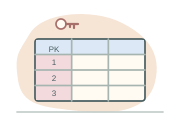
The identifier that uniquely identifies a record within a table.
client_key identifies one client-dimension row.
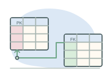
A field referencing an eligible key in another table, connecting related records.
client_key in cb_dtl_ft_pharmacy_dispense references the client dimension.
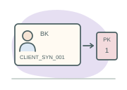
An identifier meaningful to the source system or business process.
CLIENT_SYN_001 is a source-facing identity, distinct from its numeric warehouse keys.
A business key is not automatically a suitable warehouse primary key. Its stability, uniqueness across sources and versioning may differ from the warehouse's needs.
cb_dtl_dm_client.client_key is a warehouse-assigned surrogate, while client_id is a synthetic business identifier. The fact's client_key points to a specific dimension row. This decouples warehouse identity from local identifiers, which may collide across source systems or change. A Type 2 dimension has several surrogate keys for successive versions of one business entity; an event must reference the version valid at the event time.
| Concept | Precise meaning | HealthDataNepal example |
|---|---|---|
| Candidate / primary / alternate | Candidate = minimal unique identifier; choose one as primary; other candidates are alternate keys. | client_key is primary; (client_id, effective_from) is the alternate candidate key in the versioned teaching dimension. |
| Natural / business key | Identifier arising from a business process, possibly requiring source and coding version. | (source_system, source_record_id) identifies a line here; sources with transaction-level IDs also need a line number. |
| Surrogate key | Warehouse-generated identifier without clinical meaning; unique does not mean consecutive. | product_key = 1 selects the SYN-A product version. |
| Composite key | A key containing several columns. | (hospital_stay_key, diagnosis_position) identifies a bridge assignment in this model. |
| Foreign key | Child values must match a referenced PRIMARY KEY or UNIQUE constraint, unless nullable rules permit missing values. | pharmacy dispense.product_key references health_product.product_key. |
| UNIQUE / NOT NULL / CHECK | Respectively prohibit duplicate constrained values, missing values, and conditions evaluating FALSE. | Unique source line; required timestamp; strictly positive dispensing quantity. |
A primary key combines uniqueness and non-nullability; a table has one primary-key constraint, which can span multiple columns. It can have several unique constraints. A nullable UNIQUE column is not equivalent to a mandatory candidate identifier. In Oracle, a single-column UNIQUE constraint allows multiple NULLs; for a composite unique key, all-NULL keys are allowed, while matching non-NULL components with NULL in the remaining positions can still conflict. Use NOT NULL on every component when a business identifier must always exist.
CREATE TABLE cb_dtl_dm_client (
client_key NUMBER(10) CONSTRAINT pk_client PRIMARY KEY,
client_id VARCHAR2(30) NOT NULL,
effective_from DATE NOT NULL,
CONSTRAINT uq_client_version UNIQUE (client_id, effective_from)
);
-- A positive quantity rule alone still permits NULL:
-- CHECK (quantity > 0) evaluates UNKNOWN for NULL.
-- Combine it with NOT NULL when quantity is mandatory.
ALTER TABLE cb_dtl_ft_pharmacy_dispense
ADD CONSTRAINT ck_dispense_quantity CHECK (quantity > 0);
ALTER TABLE cb_dtl_ft_pharmacy_dispense
ADD CONSTRAINT fk_dispense_client FOREIGN KEY (client_key)
REFERENCES cb_dtl_dm_client (client_key);The abbreviated code illustrates constraint forms; the downloadable schema already includes these rules and additional fields. The composite client identifier permits multiple historical versions. Do not reapply these declarations to the supplied schema: duplicate constraints can fail. A foreign key does not create an index on its child columns automatically. Index selection is a separate performance and concurrency decision.
Choose one dispensing line, then a relationship. The highlighted dimension row is the one a join will reach. The invalid cases are browser demonstrations of database rules; they do not modify the downloadable dataset.
A one-to-one relationship can be represented by a child foreign key that is also UNIQUE; mandatory participation may require additional design. A one-to-many relationship places a foreign key on the many side. A many-to-many relationship needs an associative table, such as the hospitalization–diagnosis bridge. A client with two dispensing lines is not a duplicate client. Two source deliveries of the same line are duplicate submissions. Two different line identifiers for the same actual dispensing event may be a semantic duplicate that keys alone cannot detect.
Stable keys should survive renaming a hospital. Identity corrections need controlled crosswalks, versioning and reconciliation; overwriting historical keys casually can break longitudinal analyses. An orphan fact has no matching referenced dimension. Enforced constraints block it; an unconstrained staging area may quarantine it until the dimension arrives. A governed “unknown” dimension row is an explicit alternative with a quality flag, not evidence that identity has been resolved.
Oracle rules: 19c constraint reference. The laboratory reports illustrative ORA-style failures; it is not an Oracle error console.
Integration is a sequence of accountable handoffs, each with a schema, a quality rule and an owner.
Community pharmacies would submit dispensing lines from proposed Pharma-Nepal terminals. Hospitals supply admission and discharge episodes; physician systems distinguish scheduled appointments, completed consultations and reimbursed claims; emergency systems supply attendances. A claim may contain several service lines and may be rejected or adjusted, so claim counts are not interchangeable with completed visits.
Ambulatory care means care without inpatient admission in its relevant reporting context; it is not a synonym for ambulance transport. Emergency encounters, outpatient consultations, day procedures and ambulance dispatches can have separate grains. This monograph's emergency fact represents an ED attendance, not a vehicle journey.
Care settings create different records at their own event grains.
One product dispensing line
One inpatient episode
One completed encounter
One ED attendance
Authenticated senders deliver records securely and receive an acknowledgment.
Encrypted interfaces · Files / APIs · Replay-safe delivery
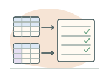
Incoming records are held, checked and prepared before being trusted as warehouse data.
Immutable source payloads · Batch metadata · Quarantine
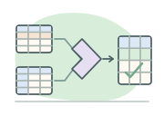
Records are standardized to refer consistently to clients, products, facilities and services.
Person linkage · Provider identities · Code crosswalks · Canonical events
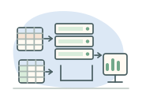
Validated historical records are organized into consistent structures for analysis.
Event facts · Conformed dimensions · Diagnosis bridges · History
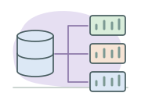
Approved subject datasets and shared definitions make reports comparable.
Population health · Medicines · Inpatient, physician and ED utilization
Authorized users ask questions through controlled tools and reporting services.
SQL Developer · Python · R · Power BI · Approved reports
Across every layer: governance · security · lineage · quality · monitoring
Staging retains an immutable source payload and delivery metadata under a controlled retention policy. Integration standardizes product and provider codes and resolves identity with separately governed linkage services. The warehouse then exposes stable grains and conformed dimensions; subject marts add purpose-specific metrics. A semantic layer defines terms such as “admission month” so that dashboards and SQL users count the same thing.
Secure transmission requires authenticated senders, encryption, replay protection and delivery acknowledgments. A gateway does not make poor identifiers reliable. A production design would additionally specify capacity, high availability, recovery objectives, data-sharing agreements, stewardship, interoperability standards, key management and staffing. These choices require local institutional work and cannot be settled by a diagram.
What does one row represent? Every measure, key and join follows from that answer.
A fact records an event or observation at a declared grain. A measure is a value associated with that observation. A dimension supplies descriptive attributes used to filter and group facts. In the pharmacy fact, quantity belongs to one product line; total_cost is the synthetic line expenditure in NPR. Adding quantities across different strengths or dosage forms is not a meaningful standardized utilization measure without a conversion rule.
A star schema surrounds one fact with dimensions. A snowflake normalizes parts of a dimension into additional related tables. A conformed dimension has consistent keys and semantics across facts, enabling comparison after each fact is summarized to a common grain. It does not justify joining all raw fact rows on client_key: two pharmacy lines and three ED attendances would otherwise produce six combinations.
The pharmacy star has six dimension relationships: client, prescriber, product, pharmacy, dispensing date and dispensing geography. Location here means the dispensing location; it does not silently substitute for the client's residence. The date dimension can play several roles in other facts, such as admission date and discharge date.
Switch the fact below to inspect its row definition, required relationships and available measures. An ED attendance followed by an admission remains one ED attendance and one inpatient admission. A documented linkage can connect them without collapsing their separate durations.
| Fact table | One row | Key fields and measures |
|---|---|---|
cb_dtl_ft_pharmacy_dispense | One product line in a dispensing transaction. | dispense_line_key; source line identity; client, prescriber, product, pharmacy, geography and date keys; dispensed_at; quantity, days_supply, total_cost. |
cb_dtl_ft_hospital_stay | One admission-to-discharge episode, including an open episode if permitted. | hospital_stay_key; encounter_id; client and facility keys; admit/discharge date keys; admitted_at, discharged_at; length_of_stay_hours, disposition. |
cb_dtl_ft_physician_visit | One completed physician encounter. | physician_visit_key; encounter_id; client, prescriber, facility, service and date keys; encountered_at; consultation mode and service amount. Appointments and claims are separate source concepts. |
cb_dtl_ft_emergency_visit | One ED attendance. | emergency_visit_key; encounter_id; client and facility keys; arrival and triage/departure times; triage class, wait minutes, ED duration, disposition and optional inpatient linkage. |
Additive measures can be summed across compatible dimensions: line expenditure in one currency and price basis is a typical example. Semi-additive measures can be summed across some dimensions but not others: occupied beds at a particular instant can sum across facilities but not across successive days as a point-in-time stock. Non-additive measures include rates and percentages. Combine numerator and denominator before recomputing a national rate; averaging facility percentages gives equal weight to unequal facilities.
A degenerate dimension, such as a source encounter identifier, remains in the fact without a separate descriptive dimension table. A factless fact records occurrence or eligibility without a numeric measure, such as a client–program enrollment on a date. It still has a grain and can be counted. A bridge resolves multivalued relationships, such as several diagnoses assigned to one hospital stay.
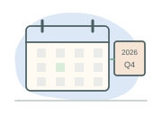
Calendar date, year, month, quarter, weekday and a documented fiscal period. The date key YYYYMMDD is a label; subtracting date keys does not compute elapsed days. The example fiscal calendar is explicitly a teaching convention.
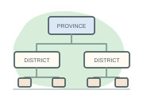
Province → district → municipality or rural municipality → ward. Use governed identifiers and effective dates. Store facility location and client residence as distinct roles; migration changes exposure and denominators.
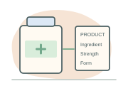
Source code, ingredient, strength, dosage form, classification, fictitious brand and effective dates. A product identifier without a code-system/version can be ambiguous.
Clients use synthetic tokens. Prescribers have a source identifier, role, specialty, status and organization. In real use, tokenization reduces direct identification but does not make linked histories anonymous.
Fictitious facility code, type, location, ownership category and capability. Pharmacy is a dedicated dimension here; a larger model could conform a facility hierarchy with carefully defined subtypes.
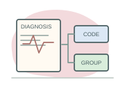
Code, system, version, description and status. ICD-10 and Canada's ICD-10-CA are related classifications with different governance and detail; this design does not assert Nepal uses ICD-10-CA.
The educational date dimension provides a complete January–March 2026 calendar. A production date dimension should cover the full supported historical and future range. The synthetic diagnosis codes illustrate code-version storage; they do not establish clinical validity or a nationally approved disease algorithm.
Type 1 slowly changing dimension processing overwrites an attribute, appropriate for a corrected spelling when the old value is not analytically useful. Type 2 closes the current row and inserts a new surrogate-key version. A physician changing specialty, a client moving districts, or a hospital reorganizing can then be analyzed using the version valid when the event occurred.
client_key (PK) | client_id (BK) | Residence | valid_from_utc | valid_to_utc, exclusive | is_current |
|---|---|---|---|---|---|
| 101 | CLIENT_SYN_001 | Kaski | 2025-12-31 18:15:00 | 2026-02-14 18:15:00 | N |
| 105 | CLIENT_SYN_001 | Chitwan | 2026-02-14 18:15:00 | 9999-12-31 00:00:00 | Y |
Use half-open intervals [valid_from, valid_to). Match the client business key and the event timestamp to the interval. Enforce no overlapping versions in the load process; a UNIQUE constraint on business key and start time does not prevent overlaps. When an event arrives late, choose its historical version rather than the row marked current. A late dimension can use an inferred member followed by controlled enrichment. A retrospective source correction may require restating affected facts and publishing a revised extract with provenance.
-- Design illustration: all three times below are canonical UTC TIMESTAMPs.
SELECT f.source_record_id, d.client_key
FROM hdn_stage_dispense f
JOIN hdn_client_history d
ON d.client_id = f.client_id
AND f.event_at_utc >= d.valid_from_utc
AND f.event_at_utc < d.valid_to_utc;Products changing classification and geographic boundaries need the same explicit choice between historical and current reporting. Multiple procedures and diagnoses need separate child or bridge structures. If one admission has three diagnoses, a join yields three rows; its length of stay is repeated three times. Count distinct admissions for encounter counts, or use EXISTS to filter stays by a diagnosis. Do not use SUM(DISTINCT length_of_stay_hours) as a repair: two different stays can legitimately have the same duration.
Modeling baseline: Oracle 19c: logical warehouse design; code-system example: CIHI ICD-10-CA.
Keep one dependable account of each fact, then build deliberate, governed copies for the questions people need to answer.
A pharmacist corrects a medicine's description. If the description is copied into every dispensing record, which copies must change? If only one changes, two clients can appear to have received different products even though the product identifier agrees. Normalization gives each kind of information an appropriate home. Denormalization deliberately repeats selected information or calculations to make a particular reading task simpler. Both choices require clear ownership, keys, and maintenance rules.
Continue with the pharmacy case: a prescription for CLIENT_SYN_001 may contain several product lines. Recording that prescription correctly and comparing years of dispensing activity are related tasks with different access patterns. The progression below changes how information is organized; it does not authorize losing the original events or confusing a prescribed line with a completed dispensing event.
One Prescription row stores products_csv beside product_descriptions_csv. Matching positions, validating quantities, and finding one product become fragile parsing tasks.
PrescriptionHeader owns the prescription; PrescriptionLine owns each line. Client and Product supply shared descriptions through keys.
cb_dtl_ft_pharmacy_dispense records dispensing lines. Conformed dimensions provide client, product, place, provider, and calendar context for analysis.
A summary groups measures by chosen keys. It can reduce repeated aggregation, but adds storage, refresh work, and a freshness obligation.
In this deliberately small operational model, rx_id identifies a prescription, (rx_id, line_no) identifies its line, and product_id identifies a product description. A functional dependency states a rule over every valid database state: for example, product_id → product_name. Agreement in today's sample is insufficient evidence of that rule. Here, product identifiers are assumed stable and descriptions represent current catalog wording.
| Illustrative relation | Primary key and references | Information owned here |
|---|---|---|
PrescriptionHeader | PK rx_id; FK client_id → Client.client_id | client_id, prescribed_at |
PrescriptionLine | PK (rx_id, line_no); FKs to PrescriptionHeader and Product | product_id, quantity |
Product | PK product_id | product_name, strength, dosage_form |
Client | PK client_id | client_district under the simplified current-residence assumption |
The earlier normalization example introduces the formal progression. Here it guides a design decision rather than a mechanical instruction to split every column:
| Normal form | Rule and pharmacy interpretation |
|---|---|
| First normal form · 1NF | Store one value per attribute at the declared grain; remove repeating product lists. Each PrescriptionLine represents one line, with a scalar product_id. |
| Second normal form · 2NF | In 1NF, every non-prime attribute depends on the whole of each candidate key, not a proper subset. prescribed_at depends on rx_id, so place it in the header rather than repeat it under (rx_id, line_no). |
| Third normal form · 3NF | For every nontrivial dependency X → A, X is a superkey or A is prime. Move product_name to Product because the line's product determines its catalog description. |
| Boyce-Codd normal form · BCNF | Every determinant of a nontrivial functional dependency is a superkey. This is stronger than 3NF; examine all candidate keys and business rules before claiming it. Adding a surrogate key alone does not remove other dependencies. |
A prime attribute belongs to some candidate key; a superkey uniquely determines the entire row. These rules address dependency-driven repetition. A valid decomposition must also reconstruct the intended information without spurious combinations. They do not independently enforce transaction atomicity, chronology, or every clinical business rule.
Update: correcting a copied product name in one line leaves contradictory copies elsewhere. Insertion: a single all-purpose prescription table may provide no sensible place to register a new product before anybody receives it. Deletion: deleting the last prescription line may erase the only surviving product description. Separate catalog and event tables avoid these particular anomalies while allowing products to exist independently of transactions.
Primary keys prevent duplicate identities; foreign keys ensure that a referenced parent exists. For the illustrative model, a line cannot reference a nonexistent product. Referential integrity alone cannot guarantee that copied descriptions agree, or that an existing product was clinically appropriate. A correction affecting multiple tables still needs a transaction and appropriate application validation. Oracle's data-integrity documentation explains the constraint mechanisms that support these rules.
-- Illustrative operational model only; these four tables are not installed.
SELECT h.rx_id, l.line_no, c.client_id,
p.product_name, l.quantity
FROM PrescriptionHeader h
JOIN PrescriptionLine l ON l.rx_id = h.rx_id
JOIN Product p ON p.product_id = l.product_id
JOIN Client c ON c.client_id = h.client_id
WHERE c.client_id = 'CLIENT_SYN_001';The query reconstructs the reader's desired description through three joins. The tables own different facts, so this complexity is meaningful. Avoiding joins by copying every description into every event exchanges query convenience for repeated values and additional update responsibilities.
A dimensional model typically keeps event measures in a narrow fact table and groups descriptive attributes into dimensions. Repeating a classification label across product rows, for example, can avoid a separate classification join. This is denormalization within the descriptive structure; it does not require copying all product text into every dispensing fact. The supplied product dimension contains product_name, ingredient, strength, and classification.
The fact retains dispense_line_key as its primary key and product_key and client_key as foreign keys. The source-facing CLIENT_SYN_001 remains distinct from its numeric warehouse keys. Historical client versions can share a business identifier while having different surrogate keys; join each fact to the dimension version it actually references. Oracle's logical-design guide describes the redundancy accepted in star dimensions, and its dimensions guide distinguishes normalized and denormalized hierarchies.
-- Supplied warehouse objects: aggregate dispensing lines for one client.
SELECT p.product_key, p.product_name,
COUNT(*) AS dispensing_lines,
SUM(f.quantity) AS total_quantity,
SUM(f.total_cost) AS recorded_cost
FROM cb_dtl_ft_pharmacy_dispense f
JOIN cb_dtl_dm_health_product p ON p.product_key = f.product_key
JOIN cb_dtl_dm_client c ON c.client_key = f.client_key
WHERE c.client_id = 'CLIENT_SYN_001'
GROUP BY p.product_key, p.product_name
ORDER BY p.product_key;This query uses two joins because the requested context lives in two dimensions. Its counts describe dispensing lines, not prescriptions or unique clients. Quantities remain grouped by product; adding quantities for incompatible strengths or dosage forms would produce an unhelpful measure. SUM(total_cost) excludes null costs, so the result represents recorded amounts, not proof of complete expenditure.
| Design | Reading and storage | Writing and integrity |
|---|---|---|
| Normalized operational relations | Descriptions stored once per entity; reconstruction may need more joins. Compact rows may reduce the bytes a relevant scan reads. | One catalog correction changes one owned value; dependent events use keys. More tables can require coordinated transactional writes. |
| Dimensional star | Fewer hierarchy joins can simplify recurring analysis. Repeated dimension attributes consume space; the fact still requires joins for descriptions. | Governed loads maintain conformed values and historical versions. Primary and foreign keys remain useful. |
| Flat redundant extract | A selected report may read descriptive columns without joins. Wider repeated rows can increase storage and I/O. | Copied descriptions need synchronized maintenance or a reproducible rebuild. Independent edits invite contradiction. |
| Precomputed summary | A suitable aggregate reads fewer result groups and avoids redoing that aggregation for every request. | Refresh consumes resources; detail corrections require recomputation. A summary cannot answer questions below its grain. |
Join count is not elapsed time. Oracle chooses access paths and join methods using estimated cardinalities and costs; data distribution, row widths, available memory, concurrency, and physical layout matter. A selective indexed lookup may outperform scanning a large flat table; a broad analytical scan may reasonably avoid an available index. Indexes also consume space and add maintenance to writes. Consult Oracle's join methods and access paths.
Representative optimizer statistics describe row counts, distinct values, distributions, and index characteristics. Suitable date partitioning may let a predicate eliminate irrelevant partitions and reduce I/O; it does not make every query prune. Compression, clustering, indexes, partitions, and load strategy are physical choices to evaluate alongside the logical model. The small browser experiment demonstrates data organization and consistency, not Oracle's optimizer. See optimizer statistics and partition pruning.
An ordinary view stores a query definition rather than its result rows. A materialized view stores a result and occupies space. An application-maintained summary table also stores aggregates, but its load process must implement reconciliation and freshness rules. None replaces the detailed source of truth: retain governed source events and transformations so derived results can be rebuilt. Oracle distinguishes these objects in views and materialized views.
The optional Oracle 19c example below stores one all-period group per client-version key and product key. It cannot answer monthly questions without rebuilding its definition at a time-aware grain. Run it only in a dedicated educational schema that already owns the supplied fact table. Prerequisites include directly granted CREATE MATERIALIZED VIEW and CREATE TABLE, sufficient tablespace quota, and privileges needed to invoke DBMS_MVIEW. Cross-schema source access needs direct SELECT or READ grants and qualified object names. This example has not been executed against Oracle.
-- Optional additional object; not part of the default setup scripts.
CREATE MATERIALIZED VIEW cb_an_pharmacy_product_mv
BUILD IMMEDIATE
REFRESH COMPLETE ON DEMAND
AS
SELECT client_key, product_key,
COUNT(*) AS dispensing_lines,
SUM(quantity) AS total_quantity,
SUM(total_cost) AS recorded_cost
FROM cb_dtl_ft_pharmacy_dispense
GROUP BY client_key, product_key;
-- After a successful source load, explicitly refresh in SQL*Plus or SQLcl.
BEGIN
DBMS_MVIEW.REFRESH(
list => 'CB_AN_PHARMACY_PRODUCT_MV',
method => 'C',
atomic_refresh => TRUE);
END;
/
SELECT product_key, total_quantity, recorded_cost
FROM cb_an_pharmacy_product_mv
WHERE client_key = 1
ORDER BY product_key;BUILD IMMEDIATE populates the result initially. Complete refresh reruns its defining query; this example does not require materialized view logs or claim fast-refresh eligibility. With on-demand refresh, subsequent fact changes are absent until refresh succeeds. The last query selects one surrogate client version, not every version of the business identifier. Record the source batch, successful refresh time, and coverage period alongside published results. Query rewrite is not enabled or demonstrated here. Verify prerequisites and refresh behavior in CREATE MATERIALIZED VIEW, materialized-view refresh concepts, and DBMS_MVIEW.
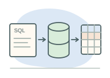
PART IV · ORACLE DATABASE 19cThe star schema describes what HealthDataNepal means. Oracle's instance, memory, processes, and files explain how those meanings become dependable queries and durable transactions.
Oracle SQL Developer is a client application. The database runs elsewhere, perhaps on a protected government server. A connection specifies a host, network endpoint, service, and approved authentication method. Oracle Net carries communication; the listener accepts a connection request and arranges access to the requested service. In a typical dedicated-server connection, a server process subsequently handles that session's database work. The listener is not the component that evaluates every SQL expression. A successful network connection does not itself grant access to patient records. Authentication establishes identity; authorization determines permitted operations. See Oracle's listener architecture.
A database, in the physical architectural sense, consists of persistent files. An instance consists principally of shared memory and background processing that manages those files. Shutting down an instance releases memory without intentionally deleting its database. A single-instance deployment has one instance accessing the database; Oracle RAC permits multiple instances to access a shared database. This monograph illustrates the single-instance case. A schema is the namespace and collection of objects belonging to a database user; HDN_DW is therefore neither a computer nor a separate instance. See Database Concepts: instances.
Oracle 19c supports both the older non-CDB architecture and multitenant architecture. A container database, or CDB, contains a root, a seed used to create pluggable databases, and optionally customer-created PDBs. A PDB contains application schemas and objects and presents a database-like service to its clients. It does not normally have its own independent instance: PDBs within a CDB share instance resources. Connecting to an approved HealthDataNepal PDB service is different from connecting as an administrator to the CDB root. Local users and privileges must be considered in their container context. See Oracle's multitenant introduction.
The SGA — System Global Area is shared instance memory. Its database buffer cache holds blocks, the shared pool holds reusable SQL and dictionary information, and the redo log buffer temporarily holds change records. Other components include a large pool, Java pool, and Streams pool when relevant to the configuration. The PGA — Program Global Area is private process memory; sorts and hash joins can use its SQL work areas. Session state belongs to the User Global Area (UGA): it resides in the PGA for a dedicated server and in shared memory for a shared-server arrangement. Memory pressure can cause work areas to spill to temporary storage, so a large analytical sort can affect both memory and I/O. See Oracle's memory architecture.
| Component | Responsibility | HealthDataNepal implication |
|---|---|---|
| Server process | Parses, executes, and fetches for client requests. | A worksheet query is processed on the server. |
| DBWn — Database Writer processes | Writes modified buffer-cache blocks to data files. | Data-file writes need not coincide with each commit. |
| LGWR — Log Writer | Writes redo from the redo log buffer to online redo logs. | Ordinary synchronous commit waits for required redo persistence. |
| CKPT — Checkpoint process | Updates checkpoint information and signals checkpoint activity. | Checkpoint coordination supports bounded recovery work. |
| SMON — System Monitor | Performs system-level recovery and maintenance tasks. | Recovery can restore a consistent state after interruption. |
| PMON — Process Monitor / cleanup processes | Detects abnormal termination; CLMN coordinates cleanup and may delegate to CLnn helpers. | Abandoned client sessions do not retain resources forever. |
The diagram is a teaching abstraction; on Windows, Oracle's process architecture can use threads within an operating-system process. See Oracle's process architecture.
A data block is Oracle's basic logical storage unit. An extent groups logically contiguous blocks; a segment groups extents allocated to an object or object partition. A tablespace contains segments and maps to data files; temporary tablespaces use temp files. A schema groups objects by ownership, whereas a tablespace groups allocated storage. A partitioned table can have several segments, so “one table equals one file” is a poor mental model. Control files describe critical database structure and recovery state. Online redo logs record changes needed for recovery; archived redo preserves completed log contents when archiving is configured. Undo stores information used for rollback and consistent reads, rather than replacing redo. See logical storage structures.
The client sends SQL and bind values. Parsing checks syntax, names, and privileges and locates or creates a usable cursor. A hard parse includes optimization; a reusable cursor can avoid that work. The optimizer considers statistics and alternative access and join strategies. Execution opens row sources, and fetching delivers rows to the client. These are conceptual phases, not an instruction to read every table in textual order. The server can obtain a block from the buffer cache; some operations use direct-path reads. It is therefore incorrect to draw every query as a mandatory trip through physical disk. See Oracle's SQL processing overview.
Suppose an ingestion transaction inserts a dispensing line and updates its load-control record. Atomicity means the work commits or is rolled back as a unit. Consistency means declared invariants remain satisfied; a database cannot infer all clinical rules. Isolation governs what concurrent sessions observe. Under Oracle's default READ COMMITTED isolation, each statement sees a consistent snapshot, while later statements can observe later commits. Durability means a committed change survives the failures covered by the configured persistence and recovery system. It is not a promise against every possible loss of all storage. See transactions and concurrency and consistency.
A change creates undo and redo and changes cached blocks. With ordinary synchronous commit, LGWR persists required redo before success is acknowledged; DBWn can write the corresponding data blocks later. Recovery can replay redo and undo uncommitted work. Undo also helps a reader reconstruct earlier block versions while another session changes data. Long queries still require adequate undo retention and capacity; consistency is not unlimited historical storage. The following sequence separates a transaction's logical outcome from the timing of data-file writes.
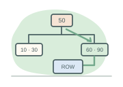
A B-tree index can efficiently locate selective values or ranges. A bitmap index encodes value membership and can suit read-intensive warehouse filtering, but concurrent modifications can contend on bitmap entries covering many rows. A busy dispensing OLTP system therefore should not inherit warehouse bitmap choices automatically. A full table scan can be sensible when a report needs most rows. Statistics describe distributions and sizes; stale estimates can produce poor plans. See optimizer access paths.
Nested loops repeatedly probe an inner row source and can work well for a small selective outer input. Hash joins build and probe a hash structure and often suit large equijoins. Sort merge joins sort or consume ordered inputs. Their suitability depends on cardinality, data distribution, available indexes, memory, and parallelism. Parallel execution shares work among workers but adds coordination and resource demand; more workers do not guarantee lower total cost. Compare estimated rows with measured rows before changing indexes or adding hints. See Oracle's join methods.
EXPLAIN PLAN FOR
SELECT COUNT(*)
FROM cb_dtl_ft_hospital_stay
WHERE admitted_at >= TO_TIMESTAMP_TZ(
'2026-01-01 00:00:00 +05:45', 'YYYY-MM-DD HH24:MI:SS TZH:TZM')
AND admitted_at < TO_TIMESTAMP_TZ(
'2026-02-01 00:00:00 +05:45', 'YYYY-MM-DD HH24:MI:SS TZH:TZM');
SELECT * FROM TABLE(DBMS_XPLAN.DISPLAY());EXPLAIN PLAN stores an estimated plan; it does not execute the report or prove actual elapsed time. A suitably authorized engineer can inspect a real cached cursor and execution statistics separately. Explicit +05:45 bounds define January in Nepal time for this dataset's time-zone-aware columns. Every plan drawn on this page is illustrative. See EXPLAIN PLAN.
Range partitioning hospitalization records by admission month can let a January query eliminate unrelated partitions. This is partition pruning, not a reduction in the logical answer. Predicates on the partitioning column and compatible data types make the intended boundary clear; wrapping that column in transformations can complicate pruning. A query for January admissions differs from one for patients present during January, which may need earlier admission partitions. The laboratory assumes a proposed partitioned deployment; the small educational table need not itself be partitioned. See partition pruning.
A materialized view stores a query result, such as monthly service counts. Eligible query rewrite can use it transparently, subject to configuration, refresh state, and semantic requirements. Incremental refresh requires supporting conditions; declaring a materialized view does not guarantee fast refresh. Incremental ingestion likewise needs explicit treatment of corrections and deletions. See materialized-view design.
RMAN supports physical backup and recovery; protected archived redo extends recovery beyond a backup. A tested restore procedure matters as much as a successful backup job. A disaster-recovery plan separately defines acceptable data loss, recovery time, off-site dependencies, and failover responsibilities. A standby can propagate an accidental change, so it is not a substitute for recoverable historical backups. Audit logs support investigation but cannot recreate missing data files. See Oracle's backup and recovery introduction.
A national warehouse needs an accountable production process: preserve the submission, resolve meaning, enforce the model, reconcile the outcome, and record enough lineage to explain every published number.
| Schema | Responsibility | Illustrative contents |
|---|---|---|
HDN_STAGE | Preserve source submissions and ingestion metadata. | Raw payloads, batch identifiers, arrival times, validation exceptions. |
HDN_CORE | Resolve and standardize cross-source meaning. | Governed identity mappings, code mappings, canonical events. |
HDN_DW | Own dimensional structures and their integrity. | Conformed dimensions, event facts, historical versions. |
HDN_MART | Publish approved subject-area products. | Utilization summaries and documented reporting views. |
HDN_ANALYTICS | Provide governed analytical workspaces. | Approved cohorts, intermediate panels, controlled collaboration. |
Separate ownership makes a rejected source row distinguishable from a published fact. It also allows different retention, write access, and operating responsibilities. In a real program, individual analytical users may have separate personal schemas rather than share one account. A service identity loads warehouse tables; an economist's account receives only approved access. These are proposed HealthDataNepal boundaries, not assertions about Nepal's existing infrastructure.
ETL means Extract, Transform, Load. It obtains information from source systems, prepares it under defined rules and loads it into a destination such as a warehouse. A production pipeline also needs validation, deduplication, error handling, auditing and reconciliation. The six stages below are HealthDataNepal's teaching design, rather than a universal definition of ETL.
A pharmacy in Pokhara transmits a dispensing record to HealthDataNepal. Before publication, the pipeline verifies its structure, recognizes repeated submissions, standardizes codes, resolves dimension references, loads the accepted event and accounts for every incoming receipt. ELT means Extract, Load, Transform: some transformations occur after loading to a staging or processing platform. Both approaches need quality controls before analytical publication.
ETL transforms extracted information before loading the intended target; ELT loads extracted information into a staging platform before applying transformations there. A project can combine both. A scheduled batch groups submissions into an operational unit. An incremental load processes changes since a known checkpoint, while change data capture obtains source inserts, updates, and deletions from a supported change mechanism. A “last updated” watermark alone can miss backdated changes unless its guarantees and overlap rules are understood. See Oracle's loading and transformation guide.
Keep four clocks: event time records when dispensing occurred; source update time records a source correction; ingestion time records warehouse receipt; load time records publication into a target. A pharmacy can send Monday's event on Thursday and correct its quantity next week. Ordering solely by arrival would confuse clinical chronology with network behavior. Preserve the original timezone convention, conversion rule, source version, and load batch.
A source-to-target mapping specifies a source field, target field, conversion, validation, lookup, and rejection rule. For example, a source product identifier resolves through a versioned crosswalk to product_key; an event timestamp determines both a complete dispensed_at and a date-dimension reference. A missing client identifier is not repaired by inventing a matching person. Depending on policy it is quarantined, held pending linkage, or assigned an explicitly identified unknown dimension member.
First validate format and required fields, then business rules, source identity, and dimension references. Preserve exceptions in a restricted rejection table with rule identifiers and repair state. Deduplicate by a stable source-system identifier plus source event/line identity and version, not by patient, date, and medication alone: two legitimate dispensings can share those attributes. The animation steps through acceptance, duplicate submission, and rejection. Its rows are synthetic, and its browser calculations are illustrative.
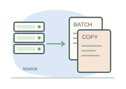
Incoming recordOriginal source envelope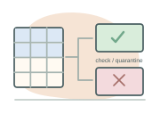
Quality checksValidate and identify replays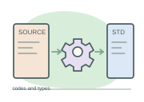
Standardized recordGoverned codes and keys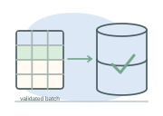
Warehouse fact tablePublish eligible records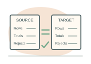
ReconciliationReceipts and outcomes agreeAn idempotent load produces the same intended target state when the same batch is replayed. A unique event identity, deterministic version selection, transaction boundaries, and an atomic load-control update help provide that property. A control table should record batch status, checksums, counts, checkpoints, error summaries, and code version. Reconcile each batch using mutually exclusive categories: received = accepted new + accepted corrections + duplicate submissions + rejected + pending. Reconcile quantities or amounts too; matching row counts alone can hide value corruption.
DDL defines structures: CREATE, ALTER, DROP, and TRUNCATE. DML changes rows: INSERT, UPDATE, DELETE, and MERGE. Access-control statements include GRANT and REVOKE. Transaction control includes COMMIT, ROLLBACK, and SAVEPOINT. Oracle DDL generally commits an existing transaction before execution and commits successful DDL afterward. Do not test TRUNCATE expecting a later rollback to restore the rows. These categories describe purpose; Oracle documentation formally groups some authorization statements with DDL.
-- Run once in your own authorized training schema.
CREATE TABLE my_load_probe (
source_record_id VARCHAR2(40) NOT NULL,
quantity NUMBER(12,2) NOT NULL
);
ALTER TABLE my_load_probe ADD CONSTRAINT my_load_probe_pk
PRIMARY KEY (source_record_id);
ALTER TABLE my_load_probe ADD CONSTRAINT my_load_probe_qty_ck
CHECK (quantity > 0);
INSERT INTO my_load_probe (source_record_id, quantity)
VALUES ('SYNTHETIC-001', 30);
SAVEPOINT before_correction;
UPDATE my_load_probe SET quantity = 28
WHERE source_record_id = 'SYNTHETIC-001';
ROLLBACK TO before_correction; -- restores 30 in this transaction
COMMIT; -- makes the inserted row durableThe table name is unqualified, so the object belongs to the connected user's schema. The primary key prevents duplicate event identifiers in this small single-source example; the check constrains quantity. Production source identity generally also needs a source-system component. See CREATE TABLE.
-- One source row, one matching target identity: safely replayable.
MERGE INTO my_load_probe t
USING (SELECT 'SYNTHETIC-001' AS source_record_id,
32 AS quantity FROM dual) s
ON (t.source_record_id = s.source_record_id)
WHEN MATCHED THEN UPDATE SET t.quantity = s.quantity
WHEN NOT MATCHED THEN
INSERT (source_record_id, quantity)
VALUES (s.source_record_id, s.quantity);
COMMIT;USING supplies source rows, ON identifies target matches, and the two branches update or insert. Deduplicate a real source first: Oracle MERGE cannot update one target row multiple times in a statement. An upsert does not automatically implement source-version precedence, deletion handling, or slowly changing dimension history. See MERGE.
CREATE SEQUENCE my_probe_seq START WITH 1 INCREMENT BY 1;
SELECT my_probe_seq.NEXTVAL AS generated_key FROM dual;
CREATE INDEX my_probe_quantity_ix ON my_load_probe (quantity);
CREATE OR REPLACE VIEW my_probe_summary AS
SELECT COUNT(*) AS event_count, SUM(quantity) AS total_quantity
FROM my_load_probe;
-- Additional privilege and storage quota are prerequisites.
CREATE MATERIALIZED VIEW my_probe_snapshot
BUILD IMMEDIATE REFRESH COMPLETE ON DEMAND AS
SELECT source_record_id, quantity FROM my_load_probe;
INSERT INTO my_load_probe (source_record_id, quantity)
SELECT 'SYNTHETIC-002', 10 FROM dual;
DELETE FROM my_load_probe WHERE source_record_id = 'SYNTHETIC-002';
ROLLBACK; -- undoes both DML operations since the preceding DDLA sequence supplies candidate surrogate values; gaps after rollback or caching are normal, so sequence continuity is not a reconciliation rule. An index is an access structure, an ordinary view stores a query definition, and a materialized view stores its result. CREATE OR REPLACE VIEW revises a view definition. The snapshot example deliberately requests complete on-demand refresh rather than promising incremental refresh. See sequences and views.
Cleanup statements such as TRUNCATE TABLE my_load_probe remove all its rows, while DROP TABLE my_load_probe removes the table definition and its data. They are deliberately shown as inline references, outside the runnable teaching sequence. PL/SQL extends SQL with variables, conditions, loops, exception handling, procedures, packages, and functions. A load package can validate a batch and coordinate SQL operations, but procedural loops should not replace a suitable set-based transformation merely because they feel familiar.
An approved analyst may create an intermediate table in their own schema if granted CREATE TABLE and sufficient tablespace quota. That system privilege does not authorize creating objects in HDN_DW. A SELECT object privilege authorizes reading a particular table or view; broader system privileges have wider scope. Roles group approved privileges. For a stored view on another owner's objects, its owner needs the required direct object grants rather than relying only on a session role. Publishing that view to others has additional grant-option requirements. See GRANT prerequisites.
-- Connected as an authorized analyst; prerequisite read access
-- to the named HDN_DW object and CREATE TABLE with quota.
CREATE TABLE my_repeat_dispense_cohort AS
SELECT client_key, COUNT(*) AS dispense_line_count
FROM HDN_DW.cb_dtl_ft_pharmacy_dispense
GROUP BY client_key
HAVING COUNT(*) >= 2;
ALTER TABLE my_repeat_dispense_cohort ADD CONSTRAINT my_cohort_pk
PRIMARY KEY (client_key);
CREATE OR REPLACE VIEW my_cohort_summary AS
SELECT dispense_line_count, COUNT(*) AS client_count
FROM my_repeat_dispense_cohort
GROUP BY dispense_line_count;
-- Only if this approved role already exists; these are YOUR objects.
GRANT SELECT ON my_cohort_summary TO hdn_research_role;
REVOKE SELECT ON my_cohort_summary FROM hdn_research_role;
SELECT table_name FROM user_tables ORDER BY table_name;
SELECT table_name, constraint_name, constraint_type, status
FROM user_constraints ORDER BY table_name, constraint_name;
SELECT grantee, table_name, privilege
FROM user_tab_privs_made ORDER BY table_name, grantee;CTAS creates a snapshot from a query; it does not copy the full source constraint, index, privilege, or refresh design. This cohort means “at least two dispensing lines in the available extract,” not two prescriptions, a clinical diagnosis, or a complete lifetime history. A steward reviews its definition, disclosure risk, lineage, and reconciliation before a deployment service publishes it into a shared schema. Secure collaboration uses named accounts and reviewed grants, not shared passwords or assumed authority over other owners' objects.
SQL describes the rows and values required. Begin with one dispensing table, then add relationships, grouped questions, and explicit missing-value rules.
SELECT dispense_line_key, client_key, quantity,
quantity / 2 AS half_quantity
FROM cb_dtl_ft_pharmacy_dispense
WHERE quantity > 0
ORDER BY dispensed_at, dispense_line_key
FETCH FIRST 5 ROWS ONLY;SELECT names output columns and expressions; FROM identifies input; WHERE keeps rows whose predicate is true. An alias labels an expression. ORDER BY defines presentation order, and FETCH FIRST limits the ordered output. The unique line key breaks timestamp ties, making the selected five deterministic. Division here teaches arithmetic; half a recorded quantity is not a clinical dose recommendation. SELECT DISTINCT client_key returns distinct selected values and therefore changes the output grain to one row per represented client. It does not repair an incorrect join. See Oracle 19c SELECT.
IN (1, 2) tests membership; BETWEEN 10 AND 20 includes both endpoints; LIKE 'SYN%' matches a prefix, with percent matching zero or more characters and underscore matching one. For timestamp periods prefer a half-open interval: at or after January 1 and before February 1. An inclusive end at January 31 midnight excludes nearly all that day. Use bind variables in applications rather than concatenating untrusted text into SQL.
The teaching sequence is FROM / JOIN → WHERE → GROUP BY → HAVING → SELECT → ORDER BY → row limit. It describes logical meaning, not a forced physical execution order. WHERE filters input rows; HAVING filters groups after aggregation. A select-list alias is usable in ORDER BY but not generally in the same query block's WHERE or GROUP BY in Oracle 19c.
SELECT f.client_key, COUNT(*) AS dispensing_lines,
SUM(f.quantity) AS recorded_quantity
FROM cb_dtl_ft_pharmacy_dispense f
INNER JOIN cb_dtl_dm_client c
ON c.client_key = f.client_key
WHERE f.dispensed_at >= TO_TIMESTAMP_TZ(
'2026-01-01 00:00:00 +05:45', 'YYYY-MM-DD HH24:MI:SS TZH:TZM')
AND f.dispensed_at < TO_TIMESTAMP_TZ(
'2026-02-01 00:00:00 +05:45', 'YYYY-MM-DD HH24:MI:SS TZH:TZM')
GROUP BY f.client_key
HAVING COUNT(*) >= 2
ORDER BY dispensing_lines DESC, f.client_key;The result has one row per qualifying client. The primary-key join preserves each fact line; joining to a table with multiple matching rows would multiply it. Summing quantities across different drugs or units has limited meaning, so a substantive utilization report should also define product, unit, and conversion rules.
| Join | Rows retained | Example purpose |
|---|---|---|
INNER JOIN | Only matching pairs. | Attach a valid dimension to each dispensing line. |
LEFT JOIN | All left rows and matching right rows. | Retain every submitted record while checking a lookup. |
RIGHT JOIN | All right rows and matching left rows. | Equivalent preservation after reversing table orientation. |
FULL OUTER JOIN | Matched pairs and unmatched rows from both sides. | Reconcile two submission inventories. |
Unmatched outer-join columns become NULL. A right-table predicate in WHERE can discard those preserved rows; decide whether that predicate belongs in ON. A join condition defines relationships, not an instruction to assume one-to-one cardinality. See Oracle's join semantics.
NULL represents missing or inapplicable information. Compare with IS NULL, not = NULL. A predicate can evaluate to UNKNOWN, and WHERE does not retain UNKNOWN. Oracle treats a zero-length character string as NULL. CASE WHEN creates explicit categories; NVL(x, y) supplies a replacement; COALESCE(a, b, c) chooses the first non-NULL expression; NULLIF(x, 0) returns NULL when x equals zero, which is useful for guarded division. Use compatible types and do not silently replace an unknown discharge with the present time.
SELECT hospital_stay_key,
CASE WHEN discharged_at IS NULL THEN 'Open episode'
ELSE 'Discharged' END AS episode_status,
COALESCE(discharge_disposition_code, 'UNRECORDED') AS disposition
FROM cb_dtl_ft_hospital_stay
ORDER BY hospital_stay_key;
SELECT SUM(quantity) / NULLIF(COUNT(*), 0) AS mean_quantity
FROM cb_dtl_ft_pharmacy_dispense;The educational hospitalization table contains closed episodes, so every example row returns “Discharged”; a production model that also stores open episodes would permit a missing discharge timestamp. The second expression counts all rows in its denominator. It equals AVG(quantity) only when quantity is non-NULL on every retained row. That is a modeling assumption to verify, not a universal identity. See Oracle SQL functions.
| Expression | Meaning and caution |
|---|---|
TRUNC(admitted_at, 'MM') | Month boundary; Oracle's datetime TRUNC returns DATE. Keep exact timestamps separately. |
TO_DATE('2026-01-15', 'YYYY-MM-DD') | Parse text using an explicit format. An ANSI DATE literal is simpler for a fixed ISO-style date. |
TO_CHAR(admitted_at, 'YYYY-MM-DD HH24:MI:SS') | Format for display; resulting text is not an event timestamp. |
EXTRACT(YEAR FROM admitted_at) | Extract the year field; group with other fields when needed to avoid mixing years. |
ADD_MONTHS(DATE '2026-01-01', 1) | Compute a calendar month boundary. |
MONTHS_BETWEEN(end_date, start_date) | Calendar-month calculation with special month-end rules; not elapsed days divided by a fixed month length. |
These expressions introduce syntax; reporting calendars also require an explicit timezone and calendar policy. For a Nepal calendar month from a timezone-aware event, use TRUNC(CAST(admitted_at AT TIME ZONE '+05:45' AS DATE), 'MM'). Datetime EXTRACT from a time-zone-aware value can use UTC fields; first convert to the intended local date when deriving a local reporting year. ADD_MONTHS and MONTHS_BETWEEN depend on NLS_CALENDAR, while datetime TRUNC uses Gregorian rules. See Oracle's TRUNC, TO_DATE, ADD_MONTHS, and MONTHS_BETWEEN references.
A subquery supplies another query's input or condition. EXISTS tests whether any qualifying row exists; it is useful when the question concerns a client's membership rather than every matching event pair. A common table expression introduced by WITH gives a query block a name. It clarifies grain and logic, but does not guarantee that Oracle will physically materialize a temporary table.
WITH dispensed_clients AS (
SELECT DISTINCT client_key
FROM cb_dtl_ft_pharmacy_dispense
)
SELECT c.client_key
FROM dispensed_clients c
WHERE EXISTS (
SELECT 1 FROM cb_dtl_ft_hospital_stay h
WHERE h.client_key = c.client_key
)
ORDER BY c.client_key;This returns one row per client represented in both datasets. It says nothing about causal relationships or whether dispensing preceded hospitalization. UNION combines compatible projections and removes duplicates; UNION ALL preserves them. INTERSECT returns shared distinct rows; MINUS returns distinct rows from the first projection absent from the second. Match the number and compatible type groups of selected columns. A compound query does not acquire a reliable order without an overall ORDER BY. See Oracle set operators.
-- Clients with dispensing records but no hospital record in the extract.
SELECT client_key FROM cb_dtl_ft_pharmacy_dispense
MINUS
SELECT client_key FROM cb_dtl_ft_hospital_stay;Begin with an approved warehouse connection, confirm its service and user, and explore authorized tables and views in the Connections tree. Expand a table to inspect columns and constraints before writing its join. The worksheet holds SQL; Run Statement executes the selected or current statement and shows query results in a grid. Run Script processes a sequence through the script runner and displays Script Output; output formatting and supported client commands differ. Execution Plan displays plan information rather than the answer table. Consult SQL Developer's concepts and usage guide.
The original diagram below separates the connection tree, schema objects, worksheet, query action, results grid, execution plan, and script output. Select a region to inspect its purpose. Credentials are deliberately absent: use the organization's approved authentication and credential storage. This GitHub page never opens a database connection; every preview is a labeled browser-side simulation. A real analyst copies a query into their authorized SQL Developer session and reviews the actual result there.
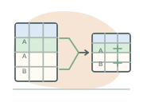
PART VII / 09 · AGGREGATE FUNCTIONSAn aggregate changes the unit of the answer. After grouping, the result has one row per group, not one row per dispensing line.
Suppose we group dispensing lines by geography. COUNT(*) counts lines in each group. COUNT(total_cost) counts lines whose cost is known. COUNT(DISTINCT client_key) counts distinct non-NULL clients in the group. These answer three different questions. A patient receiving two products in one transaction can contribute two lines, one dispensing transaction and one distinct patient; name the metric precisely.
SUM, AVG, MIN, MAX and most statistical aggregates ignore NULL arguments. An all-NULL set gives NULL for these functions, not zero; a scalar COUNT gives zero on an empty input. Replacing NULL costs with zero using NVL leaves this fixture’s known-cost sum unchanged at NPR 1,610 but lowers the mean from 1,610/15 = 107.333333 to 1,610/16 = 100.625. It treats an unknown amount as free. The known-cost mean does not estimate the full-population mean without assumptions about missingness.
| Function family | Question and interpretation | Important condition |
|---|---|---|
| SUM, AVG, MIN, MAX | Total, arithmetic mean, smallest and largest observed line cost. | Use compatible currency and units; report the number missing. |
| MEDIAN | Middle ordered value; for an even count Oracle interpolates between the middle values. | Useful with skewed costs; it is not necessarily an observed cost. |
STDDEV / STDDEV_SAMP | Dispersion in original units. | Oracle STDDEV returns 0 for one observation; STDDEV_SAMP returns NULL. |
VAR_POP / VAR_SAMP | Variance of the observed population / sample-based variance estimate. | Units are squared; VAR_SAMP is NULL for a singleton. |
| LISTAGG | A deterministic readable list of source line identifiers per group. | Give WITHIN GROUP an ordering that uniquely orders rows; truncation is an explicit presentation choice. |
CORR / REGR_SLOPE / REGR_INTERCEPT | Pearson association and least-squares slope/intercept for paired quantities. | Pairs with a missing argument are omitted. Constant predictors make slope undefined; association is not causation. |
SELECT geography_key,
COUNT(*) AS dispensing_lines,
COUNT(total_cost) AS known_cost_lines,
COUNT(DISTINCT client_key) AS distinct_clients,
ROUND(AVG(total_cost), 2) AS mean_known_cost,
STDDEV_SAMP(total_cost) AS sample_sd,
LISTAGG(source_record_id, ', ' ON OVERFLOW TRUNCATE '…')
WITHIN GROUP (ORDER BY dispense_line_key) AS source_records
FROM cb_dtl_ft_pharmacy_dispense
WHERE dispensed_at >= TO_TIMESTAMP_TZ(
'2026-01-01 00:00:00 +05:45', 'YYYY-MM-DD HH24:MI:SS TZH:TZM')
GROUP BY geography_key
HAVING COUNT(*) >= 2
ORDER BY geography_key;The 16 synthetic lines form the common input. Filter first, then group. The optional HAVING threshold tests each resulting group's line count, including when the displayed function is a cost statistic. Costs are illustrative NPR; quantities are product units and should not be pooled as a clinical dosage measure.
WHERE removes source rows before groups are built; HAVING removes groups after aggregation. For example, filtering product_key = 1 before counting is not equivalent to counting all lines and selecting a product label afterward. A nonaggregated selected column normally belongs in the GROUP BY clause. Grouping by a description can merge unrelated entities with the same label; use governed keys.
SELECT geography_key, product_key,
GROUPING(geography_key) AS geography_is_subtotal,
GROUPING(product_key) AS product_is_subtotal,
COUNT(*) AS lines
FROM cb_dtl_ft_pharmacy_dispense
GROUP BY GROUPING SETS (
(geography_key, product_key), (geography_key), ()
);
-- ROLLUP(geography_key, product_key) follows this hierarchy.
-- CUBE(geography_key, product_key) also adds product-only totals.GROUPING distinguishes a NULL generated by a subtotal from a real missing grouping value. Distinct patient counts are non-additive across groups: a client appearing in two months is counted once in each month but once in the whole quarter. Recompute the quarter's distinct count from client identities instead of adding monthly counts.
Primary baseline: Oracle 19c aggregate functions. Requested older reference: Oracle 18c aggregate functions (supplemental; 19c governs the examples).
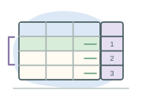
PART VIII / 10 · ANALYTIC FUNCTIONSAnalytic expressions add information from related rows without collapsing the input grain.
SUM(total_cost) is an aggregate when it summarizes a group. SUM(total_cost) OVER (...) is analytic when it annotates each row using a defined partition and window. These function families overlap. Analytic processing follows joins, WHERE, GROUP BY and HAVING; to filter an analytic result in Oracle 19c, use an outer query or CTE. There is no 19c QUALIFY clause.
WITH numbered AS (
SELECT f.*,
ROW_NUMBER() OVER (
PARTITION BY client_key
ORDER BY dispensed_at, dispense_line_key
) AS rn
FROM cb_dtl_ft_pharmacy_dispense f
)
SELECT client_key, source_record_id, dispensed_at
FROM numbered
WHERE rn = 1
ORDER BY client_key;PARTITION BY client_key restarts the calculation for each client. The analytic ORDER BY orders the calculation; a final query ORDER BY orders its output. A unique tie-breaker makes row numbering and physical row windows reproducible when two records share a timestamp. The first record in this extract is not necessarily the patient's first-ever dispensing.
Select an operation, then move the focused row. The amber row receives the result; green rows contribute to its selected calculation. LAG and LEAD follow a row offset and are not window-frame aggregates. Ranking uses cost ties; null costs are ordered last. All records remain visible.
| Expression | What it teaches | Trap to avoid |
|---|---|---|
ROW_NUMBER | A unique sequential row number within a partition. | Without a complete ordering, which tied record gets which number is nondeterministic. |
RANK / DENSE_RANK | Ranks with gaps / without gaps after ties: 1,1,3 versus 1,1,2. | Adding a unique line key to their ORDER BY removes the cost ties you meant to rank together. |
| LAG / LEAD | Previous / next ordered record; default missing predecessor is NULL. | Missing capture can make a recorded gap longer than the true gap between services. |
FIRST_VALUE / LAST_VALUE | Value at the first / last position in the current frame. | LAST_VALUE with the default running frame often returns the current peer group's value. Use UNBOUNDED FOLLOWING for a whole-partition last value. |
| NTILE(n) | Distributes ordered rows into n near-equal count buckets. | It may separate equal values; it does not create equal numerical ranges. |
PERCENT_RANK / CUME_DIST | (rank−1)/(rows−1), with singleton 0 / fraction at or below the row including peers. | Interpret the direction and NULL placement of the ORDER BY. |
RATIO_TO_REPORT | A row value divided by the partition sum. | It is a share of the defined denominator, not a population utilization rate. |
| Window SUM / AVG / COUNT | Running totals, moving means and rolling observation counts. | ROWS counts records; a three-row window is not necessarily three months. |
For functions supporting a window, an analytic ORDER BY with no explicit frame typically uses RANGE BETWEEN UNBOUNDED PRECEDING AND CURRENT ROW. RANGE includes peers with equal ordering values, so tied rows can receive the same cumulative total. ROWS BETWEEN UNBOUNDED PRECEDING AND CURRENT ROW advances one physical row at a time; use a stable total order. A bounded RANGE frame generally restricts ordering to one expression and must use compatible numeric or interval offsets.
SELECT client_key, dispense_line_key, total_cost,
SUM(total_cost) OVER (
PARTITION BY client_key
ORDER BY dispensed_at, dispense_line_key
ROWS BETWEEN UNBOUNDED PRECEDING AND CURRENT ROW
) AS running_known_cost,
LAST_VALUE(total_cost) OVER (
PARTITION BY client_key
ORDER BY dispensed_at, dispense_line_key
ROWS BETWEEN UNBOUNDED PRECEDING AND UNBOUNDED FOLLOWING
) AS final_record_cost
FROM cb_dtl_ft_pharmacy_dispense
ORDER BY client_key, dispensed_at, dispense_line_key;For a moving monthly ED average, first create a complete month calendar, left join counts and replace absent counts with zero when absence truly means no captured events. Then apply AVG(ed_visits) OVER (ORDER BY month_start ROWS BETWEEN 2 PRECEDING AND CURRENT ROW). Early months have fewer than three available rows unless the calendar extends before the display interval. To report each province's share of hospital admissions, aggregate admissions by province first, then apply RATIO_TO_REPORT(admissions) OVER () to those province totals. This denominator is admissions in the extract, not provincial population.
Compare grouping by client with annotating each line by its client's known-cost total. The aggregate result has four rows; the analytic result retains all 16. Both totals can be correct, yet adding the repeated analytic totals produces a wrong grand total.
| Question | Use | Result grain |
|---|---|---|
| How many lines per client? | GROUP BY client_key; COUNT(*) | One client |
| Which dispensing preceded this one? | LAG over client and chronology | One dispensing line |
| Which facilities have at least two admissions? | GROUP BY facility_key; HAVING | One qualifying facility |
| What proportion of provincial totals is national? | Grouped totals, then RATIO_TO_REPORT | One province |
Primary baseline: Oracle 19c analytic functions. Requested newer reference: Oracle 21c analytic functions (supplemental; features are checked against 19c).
Begin with the outcome grain, identify the denominator, then join only what the question needs.
Economists and health analysts often build a client-level longitudinal extract or a facility-by-month panel. An administrative service count measures recorded use, not unmet need or incidence. A missing facility-month is not necessarily zero: distinguish nonparticipation, late submission and no events. A province with more dispensing lines may have greater population, better reporting coverage, different prices or different clinical need.
The twelve exercises below include source tables, join keys, filters, expected synthetic outputs and limitations. The preview displays deterministic results calculated from the checked-in records. It does not execute arbitrary SQL. Download the complete query script to run in an appropriately authorized Oracle 19c schema.
A chronic-disease cohort based on diagnosis and dispensing signals is an illustrative administrative phenotype. Clinical validation requires a prespecified algorithm, code-version review, suitable look-back and follow-up periods, and an assessment of sensitivity, specificity and local coding practices. A single code or medicine is insufficient to establish a clinically validated diagnosis. Repeated ED attendances can be legitimate separate services and should not be deleted as duplicates merely because they occur close together.
Age bands also require a reference date: age at service, at cohort entry or at year end can classify the same client differently. Do not derive age solely from birth year when exact age matters. Publish population rates only with defensible denominators and coverage definitions. For comparative or causal analysis, investigate selection into the observed records and changes in reporting systems over time.
A calendar date groups events. An exact timestamp measures when they happened.
Oracle DATE includes year, month, day, hour, minute and second, but has no time-zone field. TIMESTAMP adds fractional seconds. TIMESTAMP WITH TIME ZONE includes time-zone information. TIMESTAMP WITH LOCAL TIME ZONE normalizes to the database time zone and presents values in the session time zone; it does not preserve the original source-zone representation. Explicit conversion avoids dependence on session display formats.
The fictional first inpatient stay begins at 23:50 Nepal time on January 12 and ends at 06:20:30 on January 15. Its duration is 54.508333 hours. Subtracting truncated calendar dates gives three date boundaries, a different measure. Nepal uses UTC+05:45; 23:50 local on January 12 is 18:05 UTC that day. This page stores demonstration times with explicit offsets and shows both time bases.
WITH elapsed AS (
SELECT hospital_stay_key,
SYS_EXTRACT_UTC(discharged_at)
- SYS_EXTRACT_UTC(admitted_at) AS duration
FROM cb_dtl_ft_hospital_stay
WHERE discharged_at IS NOT NULL
)
SELECT hospital_stay_key,
EXTRACT(DAY FROM duration) * 24
+ EXTRACT(HOUR FROM duration)
+ EXTRACT(MINUTE FROM duration) / 60
+ EXTRACT(SECOND FROM duration) / 3600 AS los_hours
FROM elapsed
ORDER BY hospital_stay_key;Subtracting two DATE values returns a number of days. Subtracting timestamps returns an interval; extract and combine the components rather than assuming the result is a numeric day count. Canonical UTC TIMESTAMP fields are another viable warehouse convention, provided their meaning is explicit. Preserve original source text, offset and clock-quality metadata in staging when needed for reconciliation.
| Task | Oracle 19c pattern | Interpretation |
|---|---|---|
| Explicit local display | admitted_at AT TIME ZONE 'Asia/Kathmandu' | Represent the same instant in Nepal's named region. |
| Month filter | event_at >= start_at AND event_at < next_month_at | A half-open interval includes fractional seconds correctly. |
| Calendar key | Derive local date in the reporting zone, then look up date_key. | UTC midnight and Nepal midnight identify different groups of instants. |
| Open admission | discharged_at IS NULL | Unknown future duration; distinguish an open stay from a completed-stay average. |
Cross-system integration must distinguish event time, source update time, ingestion time and warehouse load time. A local timestamp without a time zone is not safely converted until its source convention is known. Device clock drift, inconsistent date formats and delayed offline uploads can all disrupt event ordering. Do not replace a missing clinical event time with the load time and then interpret it as service time.
See Oracle 19c datetime and time-zone support and IANA time-zone source, Asia/Kathmandu.
Canadian administrative health-data systems illustrate the value of standardization, longitudinal linkage and governed access.
These public institutional sources establish data and access concepts. They do not disclose confidential database designs or establish that every jurisdiction uses Oracle. HealthDataNepal's schema names, terminal network, ETL pipeline and Oracle deployment are proposals created for this monograph.
| Canadian documented practice | Architectural lesson | Possible HealthDataNepal adaptation |
|---|---|---|
| British Columbia: the Ministry describes controlled direct access to its data warehouse through Healthideas. Academic research access is directed through Population Data BC. BC Ministry source. | Central integration and analytical access require eligibility, approvals and different access pathways. | A government warehouse with role-specific marts, documented project approval and a separately governed research access service. |
| Ontario: ICES describes a repository of record-level coded and linkable health-related datasets supporting research and evaluation. ICES source. | Stable coded identifiers support longitudinal linkage; sensitive linkage remains a governed function. | Separate identifiable linkage from pseudonymized analytical client keys and log project access to extracts. |
| Alberta: public health-data access information lists ambulatory care, inpatient discharge abstracts, pharmaceutical information, practitioner claims and demographic datasets. Alberta source. | Distinct administrative domains have different source processes, grains and completeness. | Retain separate dispensing, inpatient, ED and physician facts, with source lineage and coverage metadata. |
| CIHI: DAD captures administrative, clinical and demographic information on hospital discharges/separations. NACRS covers ambulatory activities including ED, day surgery and outpatient clinics, with jurisdiction-dependent coverage. DAD; NACRS. | Common reporting definitions and code-version governance improve comparability. Discharge-based reporting is not the same as counting admissions by admission date. | Define a locally governed encounter data dictionary; preserve admission and discharge times, diagnosis versions and submission revisions. |
HealthDataNepal would need its own institutional mandate, legal review, coding standards, implementation capacity and local stakeholder agreement. Canadian classifications, identifiers and access rules cannot simply be transplanted. This comparison is architectural inspiration, not an assertion of legal equivalence or an implementation partnership.
A technically correct query can still expose a person, omit delayed facilities, or misrepresent a correction. HealthDataNepal's proposed governance must connect permitted purpose, protected access, data quality, and dependable service.
Collect only fields justified by a defined operational or research purpose. A separately governed identity-linkage service can resolve source identities and issue project-appropriate coded identifiers. Pseudonymization replaces direct identifiers but retains a controlled route to linkage; it is not equivalent to irreversible anonymization. Rare diagnoses, precise dates, geography, and repeated events can make a coded longitudinal record recognizable. Consequently, an analyst's ability to join rows does not imply permission to identify the person behind them.
Maintain an access register recording purpose, approving authority, dataset version, fields, population, expiry, and allowed exports. Separate linkage staff, warehouse operators, researchers, and public-report authors. An approved project should receive the smallest useful dataset in a controlled sandbox. Keep names and contact details outside a utilization mart unless a justified workflow needs them. Development and testing use synthetic data, with separate accounts, environments, and secrets. None of these proposed arrangements establishes legal compliance in Nepal: local legal review and competent public authorities must determine the applicable requirements.
Role-based access organizes permissions by task; named accounts and least privilege make activity attributable. Views can expose selected columns and approved populations. Where appropriate and supported by the deployment, Oracle Virtual Private Database policies can add row predicates and column-relevant restrictions. A dashboard filter is not a security boundary: enforce access where data is served and test alternate query paths. See Oracle VPD policy configuration.
Protect data in transit through approved encrypted network configuration and at rest through suitable database and storage controls. Oracle Transparent Data Encryption protects selected columns or tablespaces against exposure of stored media; authorized database sessions still see decrypted values. Restrict and back up the encryption keystore independently, rotate credentials through approved systems, and keep passwords out of notebooks and SQL files. Lost keys can make a perfectly preserved encrypted backup unusable. Feature availability and licensing require a deployment-specific review. See Oracle TDE.
Audit authentication, privilege changes, high-risk reads, bulk exports, and administrative operations according to a documented policy. Oracle supports unified audit policies and fine-grained auditing; collection alone is insufficient without protected retention, review ownership, and alert response. Establish a breach-response process for containment, evidence preservation, affected-access assessment, and communication by responsible authorities. Do not record unnecessary patient content in error messages or audit payloads. See Oracle audit policies.
Retention rules must cover raw submissions, curated records, analytical extracts, exports, audit evidence, and backups. Deleting a row from the live warehouse does not instantly remove historical copies. Document legal holds, backup expiry, restoration handling, and how valid correction or deletion instructions propagate. Secure backups with access separation, encryption, restore testing, and an inventory of key dependencies. Security maintenance also includes supported patching, account lifecycle management, and removal of obsolete access. See Oracle's security guidelines.
Public reporting needs a disclosure review, not merely removal of names. A count of one for a rare condition in a small area can be revealing; suppression can also be defeated by subtracting totals from related tables. A proposed release policy might combine minimum-count rules, complementary suppression, coarser geography or periods, and controls across repeated releases. A single universal threshold cannot prove anonymity. Label synthetic examples as synthetic and never present these demonstration records as observations about Nepal's residents.
| Condition | Design response | What the analyst should see |
|---|---|---|
| Intermittent connectivity | Encrypted local buffering, stable event IDs, retry acknowledgements, and bounded queues. | Submission lag and coverage, not an assumed zero of activity. |
| Duplicate replay after a timeout | Idempotent ingestion, source identity uniqueness, and a replay ledger. | One accepted event with visible duplicate-submission counts. |
| Missing identifiers | Quarantine, explicit unknown members, or reviewed linkage queues. | Completeness rates and linkage exclusions. |
| Different code conventions | Versioned crosswalks and rejected unmapped codes. | Classification version and mapping uncertainty. |
| Historical correction | Preserve prior submissions, source versions, and correction provenance. | A documented refresh and revised historical totals. |
| Facility ownership changes | Stable business identity rules and effective-dated dimension versions. | Historical versus current ownership explicitly chosen. |
| Product-code changes | Governed product dictionary, pack and strength attributes, effective mappings. | Comparable units and a known product definition. |
| High-volume daily arrival | Capacity planning, staged validation, bounded concurrency, and monitored backlogs. | Data availability status and last successful publication. |
An offline terminal must distinguish “saved locally” from “accepted centrally.” A receipt confirms durable ingestion, not necessarily warehouse publication. If the connection fails after acceptance but before acknowledgement, retrying the same source event should not create a second dispensing. The same mechanism must distinguish a replay from an intentional correction; stable identities and monotonically interpreted versions make that difference explicit.
Source owners need a supported way to repair errors. Rejection dashboards should show actionable rule identifiers, restricted record details, assigned responsibility, and repair deadlines. A developer owns transformation failures; a source steward owns missing source information; clinical coding staff review classification ambiguities; a DBA owns storage, recovery, and instance health. An analyst should not silently “fix” source records inside an unpublished spreadsheet. Staffing and escalation routes are part of the architecture.
The laboratory treats each submitted row as exactly one of accepted, duplicate, rejected, or pending. Its control total must satisfy received = accepted + duplicate + rejected + pending. A zero residual means the categories reconcile; it does not certify clinical correctness, full facility coverage, or absence of missing transmissions. Compare source totals, submission manifests, accepted event totals, and published measures separately.
Define service-level objectives around successful publication latency, facility coverage, rejection age, pipeline availability, recoverability, and investigation response. Use event-time and arrival-time distributions to distinguish an ingestion outage from delayed source submission. A report for the current month should disclose the extraction cutoff and known late sources. Alerting on unusual volume needs a baseline and a responsible reviewer: holidays, source outages, policy changes, and real health-service demand can all produce abrupt differences.
A production readiness review would require identity-linkage validation, workload and failure testing, protected integration contracts, clinical and statistical review, operational runbooks, procurement and licensing assessment, and approval by the relevant authorities. This monograph supplies a coherent educational model and deterministic synthetic records. Its architecture is a starting point for that work, not evidence that a national production service already exists.
The page, its synthetic records and the downloadable SQL share the same teaching model.
Load dimensions before dependent facts, then the hospitalization–diagnosis bridge. The runnable schema uses a small single-schema educational deployment. Its inpatient table contains completed stays and requires a discharge; supporting open admissions needs nullable discharge fields and a separate duration policy. The five production-oriented schema names describe a separation of responsibilities; they are not silently created by the scripts. The Type 2, partitioning and access-control illustrations are explicitly separated from this minimal deployment.
Oracle execution limitation. No Oracle instance was available for this work. SQL was reviewed against the Oracle 19c documentation and checked for internal schema consistency; calculations were independently validated against the synthetic records. These checks do not establish successful parsing, execution plans or runtime behavior in Oracle. Run the numbered scripts in a disposable authorized 19c schema before adapting them.
Download the validation record for checks actually performed. The browser contains no account connection, remote data request or runtime library dependency. JavaScript is required for interactive laboratories; the explanatory text, original SVG diagrams and downloadable scripts remain available without it.
The compact header uses the editorial display metadata supplied by the user: November 4, 2026; Codex on Windows; GPT-6.1 Sol; High. It does not perform runtime model detection.
Oracle 19c is the primary authority for syntax and behavior. Older/newer requested pages are retained for comparison. Canadian sources document institutional practice; all HealthDataNepal designs, synthetic records and visual explanations are original.
See the source register and technical verification notes for claim scope and retrieval notes. The implementation does not assert compliance with Nepalese law; a production system requires authoritative local legal and institutional review.
Return to the beginning ↑